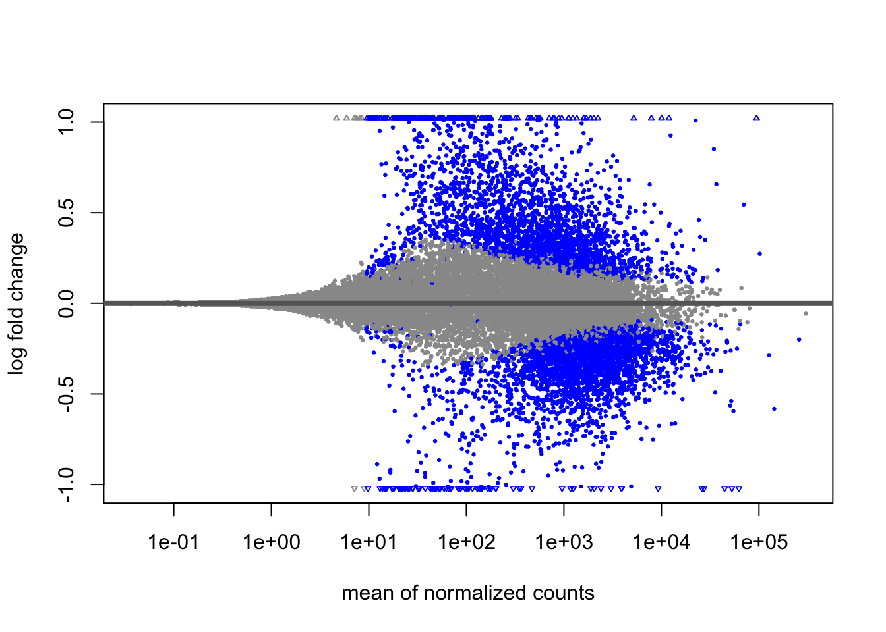
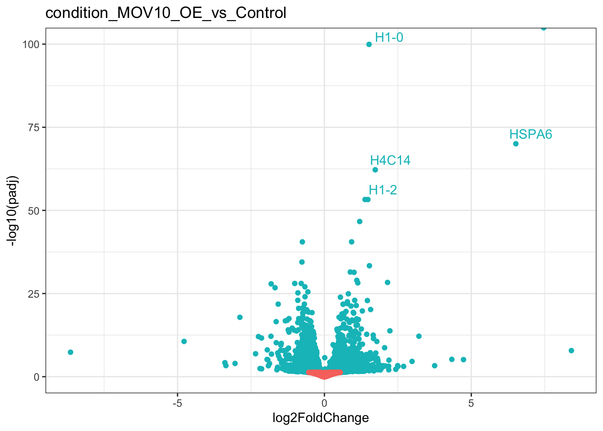

### YOU DO NOT NEED TO RUN THIS CODE!!
## Install Bioconductor packages
if (!require("BiocManager", quietly = TRUE))
install.packages("BiocManager")
BiocManager::install("DESeq2")
BiocManager::install("GenomicFeatures")
BiocManager::install("tximport")
BiocManager::install("apeglm")
## Install CRAN packages
install.packages("tidyverse")
install.packages("RColorBrewer")
install.packages("pheatmap")Differential Expression with DESeq2
Learning Objectives
- Install the DESeq2 package for use in R and RStudio
- Create a sample sheet for your differential expression analysis
- Import transcript abundance data from Salmon into a DESeq2 object
- Run differential expression analysis with DESeq2
- Assess replicate and sample groups (PCA plots and hierarchical clustering)
- Extract and visualise results (MA plots, scatter plots, volcano plots)
1. Getting Started
Differential expression (DE) analysis is commonly performed downstream of RNA-seq data analysis and quantification. We use statistical methods to test for differences in expression of individual genes between two or more sample groups. In this lesson, we will use the statistical programming language R and the DESeq2 package, specifically designed for differential expression analysis.
R and RStudio
R is an extremely powerful programming language for working with large datasets, applying statistical tests and creating publication ready graphics. RStudio is an Integrated Development Environment (IDE) for R which provides a graphical and interactive environment for R programming.
We recommend that you understand the basics of R and RStudio and follow at least the getting started and R and RStudio sections of the Introduction to R workshop. You can choose to run RStudio on your own laptop or log into the aabn RStudio server.
Installing DESeq2
DESeq2 is part of the Bioconductor repository of biology specific R packages. You can install DESeq2 using the Bioconductor manager with the code below in the R Console. These should already be installed in RStudio on the aabn server so you will not need to run this.
Create a project
Use the project drop-down menu at the top right to create a new project called Differential expression workshop or something similar and choose an appropriate working directory.
Input data
DESeq2 works with matrices of read counts per gene for multiple samples. In the past we used read counting software like HTSeq-count or featureCounts to quantify counts of aligned reads (e.g. from STAR) over exons for each gene model. The standard practice now is to use pseudocounts from tools like Salmon which do a much better job at estimating expression levels by:
- Correcting for sequencing biases e.g. GC content
- Correcting differences in individual transcript lengths
- Including reads that map to multiple genes
- Producing much smaller output files than aligners
DESeq2 requires non-normalised or “raw” count estimates at the gene-level for performing DE analysis. We will use the R package tximport to import read counts and summarise transcript abundance estimates for each gene.
In the previous lessons we generated tables of transcript abundances (quant.sf) for each sample with Salmon, using a reduced set of RNA-seq sequencing reads. As input to DESeq2 we will use similar tables generated from the full dataset.
To access these files:
Open the Terminal window in RStudio
- This is a bash terminal on the server
Link the data folder to your project folder using the Linux
lncommandln -s /data/swebb/training/RNA-seq_analysis/lesson_2/salmon .
Experimental design
We will also include a further two samples from the original publication which correspond to a MOV10 knock-down cell line using siRNA. We will use this data to investigate changes in transcription upon perturbation of MOV10 expression relative to the control (irrelevant siRNA) experiment.
| Dataset | Description |
|---|---|
| Control_1 | Control, replicate 1 |
| Control_2 | Control, replicate 2 |
| Control_3 | Control, replicate 3 |
| MOV10_OE_1 | MOV10 over-expression, replicate 1 |
| MOV10_OE_2 | MOV10 over-expression, replicate 2 |
| MOV10_OE_3 | MOV10 over-expression, replicate 3 |
| MOV10_KD_2 | MOV10 knock-down, replicate 2 |
| MOV10_KD_3 | MOV10 knock-down, replicate 3 |
MOV10 is an RNA helicase reported to associate with FMR1, a protein found in the brain and linked to fragile X syndrome.
Notes on experimental design
DESeq2 and other differential expression tools perform statistical analysis by comparing mean expression levels between sample groups. Accurate mean estimates can only be achieved with precise estimates of the biological variation between independent samples.
In DE experiments, increasing the number of biological replicates is generally more desirable than increasing read depth in single samples, unless you are particularly interested in rare RNAs. DESeq2 will not work if a sample group only has one replicate and it is recommended to have at least 3.
If you have technical replicates in your experimental design, these should be merged into one sample to represent a single biological replicate.
We also need to ensure (as much as possible) that any effect we see between groups can be attributed to differences in biology rather than confounding factors in the design or batch effects introduced at the library preparation stage.
Further Learning
Read this document on experimental design considerations in differential expression analysis.
The DESeq2 method
DESeq2 performs statistical analysis of un-normalised raw/estimated read count data per gene. It uses a median of ratios normalisation method to account for differences in sequencing depth and RNA composition between samples.
Count data is modeled using a generalised linear model based on the negative binomial distribution, with a fitted mean and a gene-specific dispersion parameter which describes the relationship between variance in the count data and the observed mean.
The model coefficient represents the change in mean between sample groups giving us log2 fold change values per gene. By default, DESeq2 performs the Wald test to test for significant changes in gene expression between sample groups and generate p-values which are then adjusted for multiple testing.
DESeq2 has internal methods for:
Estimating size factors (sample normalisation)
Estimating dispersions
Fitting the negative binomial GLM (log2 fold changes)
Filtering outliers and low count genes
Statistical tests between sample groups (p-values)
Multiple testing correction (FDR adjusted p-value)

Comprehensive tutorials
This is a lightweight introduction to differential expression analysis. For a comprehensive overview of the DESeq2 method, functionality and complex experimental designs, check out the following resources:
Key points:
- Setup R and RStudio and install required packages
- Download the required datasets
- Understand considerations for experimental design
- Understand an overview of the DESeq2 methodology
2. Create a sample file
The first step in our analysis is to create a tab separated file of sample IDs and metadata. This already exists in the folder you downloaded earlier but you would normally create this manually. We can then import the sample sheet to R with the read_tsv() function from readr.
library(tidyverse)
ss<-read_tsv("salmon/samples.tsv",col_names = T,col_types = "fff")
ss# A tibble: 8 × 3
sample condition replicate
<fct> <fct> <fct>
1 Control_1 Control 1
2 Control_2 Control 2
3 Control_3 Control 3
4 MOV10_KD_2 MOV10_KD 2
5 MOV10_KD_3 MOV10_KD 3
6 MOV10_OE_1 MOV10_OE 1
7 MOV10_OE_2 MOV10_OE 2
8 MOV10_OE_3 MOV10_OE 3 Key points:
- The sample file should contain metadata on each sample
- It is important to include all known variables that could confound results or explain technical variance
3. Importing count data with tximport
We will start by importing the count data for each sample into R. We will use the package tximportto read the Salmon transcript count files and create a matrix of read counts for each gene. The tximeta package is also worth looking at as it can auto-detect the genome you have used and download the metadata.
library(DESeq2)
library(tximport)
library(GenomicFeatures)
## List all of our salmon quant.sf files
files <- file.path("salmon",ss$sample,"quant.sf")
names(files) <- ss$sample
## Get the tx2gene map file
tx2gene <- read_tsv("salmon/salmon_tx2gene.tsv")
## Import the transcript counts and summarise to gene counts
txi <- tximport(files, type = "salmon", tx2gene = tx2gene)We must supply a map between transcript IDs and gene IDs for our annotations, so that the function can summarise counts at gene level. In the example above we read in salmon_tx2gene.tsv. This map can also be generated from a gtf annotation file using the code below:
### YOU DO NOT NEED TO RUN THIS CODE!!
## Make a Transcript DB object from our gene annotation GTF file
txdb<-makeTxDbFromGFF(organism = "Homo sapiens",file = "/data/swebb/training/RNA-seq_analysis/annotation/Homo_sapiens.GRCh38.106.gtf",format = "gtf")
txdb<-makeTxDbFromGFF(organism = "Homo sapiens",file = "RNA-seq_anannotation/Homo_sapiens.GRCh38.106.gtf",format = "gtf")
## Extract mappings from transcriptID to geneID
k <- keys(txdb, keytype = "TXNAME")
tx2gene <- select(txdb, k, "GENEID", "TXNAME")Now that we have per-gene count data, we can import this into DESeq2. We need to supply the txi object we have just created as well as a design.
The simplest design is just to compare our samples by the condition column (Control, MOV10_KD, MOV10_OE). The design is a formula in R so is preceded with the ~ character.
Further Learning
Have a look at these resources for advice on complex experimental designs (e.g. multiple variables of interest, interaction terms, time-course analysis:
- DESeq2 manual
- Time-course analysis example
- Likelihood ratio test for measuring changes across multiple sample groups at once.
Key points:
- Import pseudo-count data into R with tximeta or tximport
- DESeq2 expects gene-level counts
- Summarise transcript counts to gene counts
4. Creating a DESeq object and running DESeq
## Create the DESeq dataset object
dds <- DESeqDataSetFromTximport(txi, ss, ~ condition)using counts and average transcript lengths from tximportddsclass: DESeqDataSet
dim: 58396 8
metadata(1): version
assays(2): counts avgTxLength
rownames(58396): ENSG00000000003 ENSG00000000005 ... ENSG00000289718
ENSG00000289719
rowData names(0):
colnames(8): Control_1 Control_2 ... MOV10_OE_2 MOV10_OE_3
colData names(3): sample condition replicateThe condition column is represented in R as a factor, or categorical variable, which has levels.
levels(dds$condition)[1] "Control" "MOV10_KD" "MOV10_OE"By default, the levels are set in alphabetical order and DESeq2 will always assume that the first level is your control group to which it will compare datasets. In this case we are okay, otherwise you will need to relevel your condition column or explicitly reference the condition comparisons of interest in your results (see below).
Let’s create a list of comparisons, known as contrasts, that we want to look at. Here we will put our base-level or control sample last. We will also set a few other variables to help name our outputs.
contrasts<-list(c("condition","MOV10_OE","Control"),
c("condition","MOV10_KD","Control"))
## As well as contrasts, DESeq also uses coefficients to name results. We can create these from our specified contrasts
coefficients<-contrasts %>% map(~paste(.x[1],.x[2],"vs",.x[3],sep = "_")) %>% unlist()
## Simple project ID
project="MOV10"
## Labels for QC plots - we can add all possible confounding factors from our colData
labels= c("condition","replicate")
## Merge colData into label names in a data frame
cnames <- colData(dds) %>%
as_tibble() %>%
unite(all_of(labels), col = label, sep = "-") %>%
pull(label)
## Thresholds for p-value and fold change to filter and summarise results later
padj_thresh = 0.05
l2fc_thresh = 0 ## Just include all significant genes hereNow we are ready to run DESeq. The DESeq function has internal methods to:
- Estimate size factors to normalise gene counts per sample
- Estimate gene-wise dispersions to measure variance in the dataset
- Shrink gene-wise dispersions to improve the dispersion estimates
- Fit a negative binomial statistical model to the data
- Perform statistical testing with the Wald Test or Likelihood Ratio Test
## run DESeq
dds <- DESeq(dds)estimating size factorsusing 'avgTxLength' from assays(dds), correcting for library sizeestimating dispersionsgene-wise dispersion estimatesmean-dispersion relationshipfinal dispersion estimatesfitting model and testing## save dds object as a file - saveRDS can save R objects
saveRDS(dds,file =paste0(project,".dds.RDS"))Plot dispersions
It can be useful to plot the gene-level dispersion estimates to ensure the DESeq model is right for your data. You should find that dispersion is generally lower for genes with higher read counts, that final dispersion levels have been shrunk towards the fitted model and that a few outliers exist which have not been shrunk. If the red line is not a good generalisation for your data then DE analysis with DESeq2 may not be appropriate.
#Plot dispersions
plotDispEsts(dds, main="Dispersion plot")Key points:
- Create a DESeq dataset from count data
- Understand the DESeq design parameter
- Run the
DESeqfunction and understand the internal steps - Plot dispersions to assess the fitted model
5. DESeq quality control
Before we look at the results of differential expression tests we first want to perform some quality control by visualising and assessing the entire dataset. The raw counts are not optimal for visualisation and clustering so we will apply a regularised log transformation which reduces the bias from genes with extremely low and high counts. The rld() function can take a while to run with large datasets.
## Log transformed data
rld <- rlog(dds, blind=F)
saveRDS(rld,file =paste0(project,".rld.RDS"))Further Learning
You can read more on DESeq2 data transformations here.
Heatmap of Sample Distances
We can use our log transformed data to perform sample clustering. Here, we calculate sample distances by applying the dist() function to our transformed read count matrix.
By default, the dist() function calculates euclidean distances between the rows of a matirx. We have to transpose our read count table first to calculate distances between samples (columns). The distance calculated is a measure of the distance between two vectors, in this case the read counts for all genes:
# euclidean(a,b) = sqrt(sum((a - b)^2))A heatmap of this distance matrix gives us an overview of similarities and dissimilarities between samples.
library("pheatmap") # heatmap plotting package
library("RColorBrewer") # colour scales
sampleDists <- dist(t(assay(rld))) ## t() function transposes a matrix
sampleDistMatrix <- as.matrix(sampleDists)
rownames(sampleDistMatrix) <- as.list(cnames)
colnames(sampleDistMatrix) <- as.list(cnames)
cols <- colorRampPalette( rev(brewer.pal(9, "Blues")) )(255) ## Set a colour pallette in shades of blue
pheatmap(sampleDistMatrix,
clustering_distance_rows=sampleDists,
clustering_distance_cols=sampleDists,
col=cols)Principle Component Analysis
Another way to visualize sample-to-sample distances is a principal components analysis (PCA). In this method, the data points (here, the samples) are projected onto a 2D plane such that they spread out in the two directions that explain most of the variation in the data.
The x-axis is the direction that separates the data points the most. The values of the samples in this direction are written PC1 (principle component 1). The y-axis is a direction that separates the data the second most, PC2. The percent of the total variance that is contained in each direction is printed on the axis label. Note that these percentages do not add to 100%, because there are more dimensions that contain the remaining variance.
We expect to see our samples divide by their biological condition or some other source of variation that we are aware of (e.g. sex, cell type, batches of library preparation etc). If you do not see your samples separating by your variable of interest you may want to plot out PC3 and PC4 to see if it appears there. If there is a large amount of variance introduced by other factors or batch effects then you will need to control for these in your experimental design. See the DESeq2 vignette for more details.
We will run the PCA analysis with the DESeq2 command plotPCA().
## Principle component analysis - get the PCA data
plotPCA(rld, intgroup=c(labels[1],labels[length(labels)]))If we don’t like the default plotting style we can ask plotPCA to return the data only and create our own custom plot. Below, we use ggplot, a sophisticated plotting package in R.
## Principle component analysis - get the PCA data
pca<-plotPCA(rld, intgroup=c(labels[1],labels[length(labels)]),returnData=T)
## Plot with ggplot
ggplot(pca,aes(PC1,PC2,colour=condition,shape=replicate)) +
geom_point(size=3) +
theme_bw() +
theme(legend.key = element_blank()) +
xlab(paste("PC1:",round(attr(pca,"percentVar")[1]*100),"%")) +
ylab(paste("PC1:",round(attr(pca,"percentVar")[2]*100),"%"))Heatmap of genes with the largest variance
It may also be useful to take an initial look at the genes with the highest amount of variation across the dataset. We should expect to see some genes which appear to be differentially expressed between sample groups.
## Get the top 20 genes after ordering the rld counts by variance
topVarGenes <- head(order(-rowVars(assay(rld),useNames = T)),20)
## Create a matrix from these genes only
mat <- assay(rld)[topVarGenes, ]
anno<-as.data.frame(colData(dds)[,labels])
pheatmap(mat,cluster_rows = F,cluster_cols = F,show_rownames = T,scale="row",annotation_col = anno)Discussion
Can you guess which gene has the Ensembl identifier ENSG00000155363?
Plot Individual Gene Counts
In certain cases like ours, where we know the expression levels of particular genes should change between sample groups, we may want to plot individual gene counts. Let’s plot normalised gene counts for the MOV10 gene (ENSG00000155363).
## Get normalised counts for a single gene
gene="ENSG00000155363"
geneData <- plotCounts(dds, gene=gene, intgroup=labels, returnData=TRUE,normalized = T)
## Plot with ggplot
ggplot(geneData, aes_string(x=labels[1], y="count",fill=labels[length(labels)])) +
scale_y_log10() +
geom_dotplot(binaxis="y", stackdir="center") +
theme_bw() +
theme(legend.key = element_blank()) +
ggtitle(gene) +
theme(axis.text.x = element_text(angle = 90, hjust = 1))Warning: `aes_string()` was deprecated in ggplot2 3.0.0.
ℹ Please use tidy evaluation idioms with `aes()`.
ℹ See also `vignette("ggplot2-in-packages")` for more information.Bin width defaults to 1/30 of the range of the data. Pick better value with
`binwidth`.Key points:
- Transform count data for summary plots
- Create summary plots and assess for QC
- PCA
- Clustering by sample distance
- Heatmaps of gene counts
- Individual gene counts
6. Extract DESeq2 results
If we are happy with our QC assessment we can retrieve results from the DESeq object and visualise fold changes between specific comparisons.
DESeq2 has a results() function which by default will print the results of the last variable in your formula, comparing the last level of this variable with your base-level. In our case this is the conditions MOV10_OE vs Control.
results(dds)log2 fold change (MLE): condition MOV10 OE vs Control
Wald test p-value: condition MOV10 OE vs Control
DataFrame with 58396 rows and 6 columns
baseMean log2FoldChange lfcSE stat pvalue
<numeric> <numeric> <numeric> <numeric> <numeric>
ENSG00000000003 3493.3769 -0.4426597 0.0851357 -5.1994602 1.99868e-07
ENSG00000000005 26.2026 -0.0163884 0.4447545 -0.0368482 9.70606e-01
ENSG00000000419 1600.4515 0.3753645 0.0998817 3.7580902 1.71215e-04
ENSG00000000457 504.6620 0.2532487 0.1053669 2.4034929 1.62393e-02
ENSG00000000460 1112.7132 -0.2626755 0.0852641 -3.0807284 2.06495e-03
... ... ... ... ... ...
ENSG00000289714 0.000000 NA NA NA NA
ENSG00000289715 0.000000 NA NA NA NA
ENSG00000289716 28.600952 0.112480 0.553978 0.203041 0.839103
ENSG00000289718 0.167725 -1.026277 4.080456 -0.251510 0.801420
ENSG00000289719 14.921394 0.614092 0.547343 1.121950 0.261884
padj
<numeric>
ENSG00000000003 4.12199e-06
ENSG00000000005 9.84458e-01
ENSG00000000419 1.39950e-03
ENSG00000000457 5.80996e-02
ENSG00000000460 1.12268e-02
... ...
ENSG00000289714 NA
ENSG00000289715 NA
ENSG00000289716 0.912842
ENSG00000289718 NA
ENSG00000289719 0.444436However, the dds object stores several results. You can see these with the function resultsNames().
resultsNames(dds)[1] "Intercept" "condition_MOV10_KD_vs_Control"
[3] "condition_MOV10_OE_vs_Control"The Intercept result is a statistical model that compares gene expression to 0 so is not relevant here. We can see that we have results for both of our MOV10 perturbation experiments vs the control.
We can extract a specific result by providing arguments to the results() function. Let’s look at the first comparison in our list, MOV10_OE vs Control.
res<-results(dds,contrast = contrasts[[1]])
reslog2 fold change (MLE): condition MOV10_OE vs Control
Wald test p-value: condition MOV10 OE vs Control
DataFrame with 58396 rows and 6 columns
baseMean log2FoldChange lfcSE stat pvalue
<numeric> <numeric> <numeric> <numeric> <numeric>
ENSG00000000003 3493.3769 -0.4426597 0.0851357 -5.1994602 1.99868e-07
ENSG00000000005 26.2026 -0.0163884 0.4447545 -0.0368482 9.70606e-01
ENSG00000000419 1600.4515 0.3753645 0.0998817 3.7580902 1.71215e-04
ENSG00000000457 504.6620 0.2532487 0.1053669 2.4034929 1.62393e-02
ENSG00000000460 1112.7132 -0.2626755 0.0852641 -3.0807284 2.06495e-03
... ... ... ... ... ...
ENSG00000289714 0.000000 NA NA NA NA
ENSG00000289715 0.000000 NA NA NA NA
ENSG00000289716 28.600952 0.112480 0.553978 0.203041 0.839103
ENSG00000289718 0.167725 -1.026277 4.080456 -0.251510 0.801420
ENSG00000289719 14.921394 0.614092 0.547343 1.121950 0.261884
padj
<numeric>
ENSG00000000003 4.12199e-06
ENSG00000000005 9.84570e-01
ENSG00000000419 1.39950e-03
ENSG00000000457 5.80996e-02
ENSG00000000460 1.12268e-02
... ...
ENSG00000289714 NA
ENSG00000289715 NA
ENSG00000289716 0.912953
ENSG00000289718 NA
ENSG00000289719 0.444436The results table includes several columns:
- baseMean = Mean number of counts from all samples
- log2FoldChange = Log2 of the fold change in normalised counts between sample groups in the contrast
- lfcSE = Standard error of the log2 fold change
- stat = The test statistic (Wald test in this case)
- pvalue = The pvalue / significance level
- padj = The pvalue adjusted for multiple testing
Multiple testing correction and independent filtering
The two most important columns in our results table are log2FoldChange, which is the effect size and tells us how much a gene’s expression has changed, and padj which gives us the level of statistical significance. DESeq2 reports adjusted p-values (padj) which are corrected for multiple testing. We should use these values, not the pvalue column, to filter or call significant genes.
DESeq2 uses the Benjamini-Hochberg method to adjust p-values and control the false discovery rate. So, if you were to filter for genes with a padj<=0.05 you would expect 5% of these to be false positives.
If you inspect the result table you may notice that some genes have padj and/or pvalue set to NA. This is because the results() function performs filtering of genes to reduce the total number of genes tested and increase the likelihood of finding significant genes after the multiple testing correction. The more genes we test, the larger the multiple testing correction, so it makes sense to remove genes where we are unlikely to see a statistical effect:
- Genes with zero counts in all samples
- Genes with extreme outliers
- Genes with extremely low normalised counts
Let’s look at a summary of our results. We will also set an alpha to tell DESeq which significance threshold to use when summarising results:
summary(res,alpha=padj_thresh)
out of 34774 with nonzero total read count
adjusted p-value < 0.05
LFC > 0 (up) : 2077, 6%
LFC < 0 (down) : 2708, 7.8%
outliers [1] : 14, 0.04%
low counts [2] : 16900, 49%
(mean count < 9)
[1] see 'cooksCutoff' argument of ?results
[2] see 'independentFiltering' argument of ?resultsThis is great, we definitely have significant differentially expressed genes!
Log Fold Change Shrinkage
Let’s take a look at these results visually. DESeq2 provides a plotMA() function to create MA plots(log2FoldChange vs the mean of normalised counts), a common way to visualise DE genes.
plotMA(res)Significant genes (<=0.05 padj) appear in blue, while non-significant genes are grey. We can immediately see that genes with low counts have much larger variation in log-fold changes. DESeq2 provides the LFCshrink() to shrink the fold change estimates and reduce the “noise” from these genes. We can use it instead of the results() function and these shrunken fold changes are much better for visualising and ranking our data.
library(apeglm)
resLFC<-lfcShrink(dds,coef = coefficients[1],type="apeglm")using 'apeglm' for LFC shrinkage. If used in published research, please cite:
Zhu, A., Ibrahim, J.G., Love, M.I. (2018) Heavy-tailed prior distributions for
sequence count data: removing the noise and preserving large differences.
Bioinformatics. https://doi.org/10.1093/bioinformatics/bty895summary(resLFC,alpha=padj_thresh)
out of 34774 with nonzero total read count
adjusted p-value < 0.05
LFC > 0 (up) : 2077, 6%
LFC < 0 (down) : 2708, 7.8%
outliers [1] : 14, 0.04%
low counts [2] : 16900, 49%
(mean count < 9)
[1] see 'cooksCutoff' argument of ?results
[2] see 'independentFiltering' argument of ?resultsWe can see that the number of significant genes is unaffected. Let’s create a new MA plot.
plotMA(resLFC)
You should see how the shrunken fold changes will be more useful for downstream analysis of the data.
Create result tables for each of our comparisons
Before moving on, we are going to create result tables for each of the comparisons we are interested in. We will also order these by padj so the most significant genes are on top.
## Map each of our coefficients to the lfcShrink function
result_list<-coefficients %>% map(~lfcShrink(dds,coef = .x,type = "apeglm"))using 'apeglm' for LFC shrinkage. If used in published research, please cite:
Zhu, A., Ibrahim, J.G., Love, M.I. (2018) Heavy-tailed prior distributions for
sequence count data: removing the noise and preserving large differences.
Bioinformatics. https://doi.org/10.1093/bioinformatics/bty895
using 'apeglm' for LFC shrinkage. If used in published research, please cite:
Zhu, A., Ibrahim, J.G., Love, M.I. (2018) Heavy-tailed prior distributions for
sequence count data: removing the noise and preserving large differences.
Bioinformatics. https://doi.org/10.1093/bioinformatics/bty895names(result_list) = coefficients
result_list$condition_MOV10_OE_vs_Control
log2 fold change (MAP): condition MOV10 OE vs Control
Wald test p-value: condition MOV10 OE vs Control
DataFrame with 58396 rows and 5 columns
baseMean log2FoldChange lfcSE pvalue padj
<numeric> <numeric> <numeric> <numeric> <numeric>
ENSG00000000003 3493.3769 -0.42009662 0.0858830 1.99868e-07 4.12199e-06
ENSG00000000005 26.2026 -0.00291646 0.1952387 9.70606e-01 9.84458e-01
ENSG00000000419 1600.4515 0.34321370 0.1004344 1.71215e-04 1.39950e-03
ENSG00000000457 504.6620 0.21909429 0.1028038 1.62393e-02 5.80996e-02
ENSG00000000460 1112.7132 -0.23950281 0.0842909 2.06495e-03 1.12268e-02
... ... ... ... ... ...
ENSG00000289714 0.000000 NA NA NA NA
ENSG00000289715 0.000000 NA NA NA NA
ENSG00000289716 28.600952 0.01510826 0.202870 0.839103 0.912842
ENSG00000289718 0.167725 -0.00643906 0.217131 0.801420 NA
ENSG00000289719 14.921394 0.08953887 0.224710 0.261884 0.444436
$condition_MOV10_KD_vs_Control
log2 fold change (MAP): condition MOV10 KD vs Control
Wald test p-value: condition MOV10 KD vs Control
DataFrame with 58396 rows and 5 columns
baseMean log2FoldChange lfcSE pvalue padj
<numeric> <numeric> <numeric> <numeric> <numeric>
ENSG00000000003 3493.3769 -0.00471138 0.0834052 0.948000695 0.98020857
ENSG00000000005 26.2026 -0.07604609 0.1896524 0.198963380 0.42514606
ENSG00000000419 1600.4515 0.14366889 0.1035714 0.095040977 0.26647514
ENSG00000000457 504.6620 0.37636817 0.1174052 0.000214838 0.00284425
ENSG00000000460 1112.7132 0.16791324 0.0894084 0.031705242 0.12650603
... ... ... ... ... ...
ENSG00000289714 0.000000 NA NA NA NA
ENSG00000289715 0.000000 NA NA NA NA
ENSG00000289716 28.600952 0.05340824 0.181720 0.285774 0.528048
ENSG00000289718 0.167725 -0.00322889 0.178059 0.769643 NA
ENSG00000289719 14.921394 -0.01081164 0.171725 0.816282 NAFormatting and annotating results
We will apply a bit of formatting to our results table and also add some annotations.
- Convert to a format where we can use tidyverse verbs
- Move the rownames to a geneID column
- Add a threshold column for genes we wish to label as significant
- Order each table by padj so significant genes are at the top
result_list2<-result_list %>%
map(~as.data.frame(.x) %>%
rownames_to_column("geneID") %>%
mutate(threshold=case_when(padj<=padj_thresh & abs(log2FoldChange)>=l2fc_thresh~"Significant",T~"Not Significant")) %>%
arrange(padj) %>%
as_tibble()
)
result_list2$condition_MOV10_OE_vs_Control
# A tibble: 58,396 × 7
geneID baseMean log2FoldChange lfcSE pvalue padj threshold
<chr> <dbl> <dbl> <dbl> <dbl> <dbl> <chr>
1 ENSG00000155363 94561. 7.47 0.134 0 0 Significa…
2 ENSG00000189060 7874. 1.52 0.0704 1.33e-104 1.19e-100 Significa…
3 ENSG00000173110 257. 6.52 0.357 1.53e- 74 9.12e- 71 Significa…
4 ENSG00000270882 2234. 1.73 0.101 1.39e- 66 6.22e- 63 Significa…
5 ENSG00000187837 1605. 1.48 0.0936 1.52e- 57 5.30e- 54 Significa…
6 ENSG00000265972 5203. 1.38 0.0876 1.78e- 57 5.30e- 54 Significa…
7 ENSG00000155090 1699. 1.20 0.0810 8.51e- 51 2.17e- 47 Significa…
8 ENSG00000102317 8191. -0.752 0.0543 1.30e- 44 2.84e- 41 Significa…
9 ENSG00000112972 12428. 0.926 0.0670 1.43e- 44 2.84e- 41 Significa…
10 ENSG00000142002 2395. -0.765 0.0599 1.86e- 38 3.32e- 35 Significa…
# ℹ 58,386 more rows
$condition_MOV10_KD_vs_Control
# A tibble: 58,396 × 7
geneID baseMean log2FoldChange lfcSE pvalue padj threshold
<chr> <dbl> <dbl> <dbl> <dbl> <dbl> <chr>
1 ENSG00000116962 6310. 1.10 0.0693 3.89e-58 6.44e-54 Significant
2 ENSG00000143183 1784. 1.19 0.0792 3.08e-52 2.55e-48 Significant
3 ENSG00000270882 2234. 1.67 0.112 2.47e-51 1.37e-47 Significant
4 ENSG00000038274 2424. -1.07 0.0765 1.37e-45 5.65e-42 Significant
5 ENSG00000168036 11651. 0.812 0.0583 4.68e-45 1.55e-41 Significant
6 ENSG00000124762 2759. 1.16 0.0834 6.39e-45 1.76e-41 Significant
7 ENSG00000116473 2151. -1.02 0.0735 8.83e-45 2.09e-41 Significant
8 ENSG00000082458 4642. -0.732 0.0563 8.88e-40 1.84e-36 Significant
9 ENSG00000109971 22609. 0.739 0.0590 4.83e-37 8.88e-34 Significant
10 ENSG00000129250 2738. -1.06 0.0854 7.63e-37 1.24e-33 Significant
# ℹ 58,386 more rowsOur result table contains Ensembl gene identifier but we may want to add more annotations like the gene name and biotype. We can fetch Ensembl annotations from the R package AnnotationHub or from the BioMart website. We already have a file called genes.tsv which has some of this additional information.
genes<-read_tsv("salmon/genes.tsv")
genes# A tibble: 69,340 × 4
gene_id gene_name gene_biotype entrezid
<chr> <chr> <chr> <dbl>
1 ENSG00000223972 DDX11L1 transcribed_unprocessed_pseudogene 84771
2 ENSG00000227232 WASH7P unprocessed_pseudogene NA
3 ENSG00000278267 MIR6859-1 miRNA 102466751
4 ENSG00000243485 MIR1302-2HG lncRNA NA
5 ENSG00000284332 MIR1302-2 miRNA 100302278
6 ENSG00000237613 FAM138A lncRNA 645520
7 ENSG00000268020 OR4G4P unprocessed_pseudogene NA
8 ENSG00000240361 OR4G11P transcribed_unprocessed_pseudogene NA
9 ENSG00000186092 OR4F5 protein_coding 79501
10 ENSG00000238009 <NA> lncRNA NA
# ℹ 69,330 more rowsNow we can merge our result tables with the annotations to add extra columns:
## Map all result lists to a function that joins with the anno data
result_list_anno<-result_list2 %>%
map(~left_join(x=.x,y=genes,by=c("geneID"="gene_id")) %>%
mutate(gene_biotype=as.factor(gene_biotype))) ## biotype as a factorWe will now save these results tables to text files so we can use them outside of R if required. We can create a folder for each of our results.
## Map each of our result names to a function that saves each table in our results_list
names(result_list_anno) %>% map(function(x){
dir.create(x)
write_tsv(result_list_anno[[x]],paste0(x,"/DEseq_result.tsv"),col_names = T)
})Key points:
- Extract results for individual contrasts
- Create MA plots
- Shrink log2 fold change estimates
- Add annotations to result tables
7. Visualise DESeq2 results
We have already seen the MA plot but there are many other methods for plotting DESeq2 results. We cover some popular visualisations below.
Volcano plots
Let’s try a volcano plot, another popular visualisation for DE analysis. Here we are plotting the log fold change on the x-axis against the negative log of our p-values, so that significant genes appear at the top of the plot. We can then see the spread of fold changes in each direction in our set of significant genes.
ggplot(result_list_anno[[1]],aes(log2FoldChange,-log10(padj),colour=threshold)) +
geom_point() +
theme_bw() +
ggtitle(coefficients[1]) +
theme(legend.key = element_blank())We can even use ggrepel to label some of our genes. Let’s select five genes with the lowest adjusted pvalues.
library(ggrepel)Warning: package 'ggrepel' was built under R version 4.2.3topFive<-result_list_anno[[1]] %>% head(n=5)
ggplot(result_list_anno[[1]],aes(log2FoldChange,-log10(padj),colour=threshold)) +
geom_point() +
geom_text_repel(data=topFive,aes(label = gene_name))+
theme_bw() +
ggtitle(coefficients[1]) +
guides(colour=F)Warning: The `<scale>` argument of `guides()` cannot be `FALSE`. Use "none" instead as
of ggplot2 3.3.4.Warning: Removed 40536 rows containing missing values (`geom_point()`).
Plots of DE genes by biotype
If we are interested in more than just protein coding genes, we could take a look at the types of RNAs which are represented in our list of DE genes.
First, let’s filter our results for genes which pass our threshold for differential expression.
## Get a list of significant DEGs
sig_genes<-result_list_anno[[1]] %>% dplyr::filter(threshold=="Significant")
## Plot barplot of gene_biotype
ggplot(sig_genes,aes("Significant genes",fill=gene_biotype)) +
geom_bar() +
theme_bw() +
xlab("") +
theme(axis.text.x = element_text(angle = 45, vjust = 1, hjust=1))Heatmaps of genes with largest changes
Now that we have our results, we can use the log normalised counts we created earlier to plot heatmaps of genes with the largest changes.
## Out of all significant genes, get the 20 with the largest fold change in either direction in MOV10_OE relative to the control
## Out of all significant genes, get the 50 with the largest fold change in either direction in MOV10_OE relative to the control
top20<-result_list_anno[[1]] %>%
dplyr::filter(threshold=="Significant") %>%
arrange(desc(abs(log2FoldChange))) %>%
head(n=20) %>%
pull(geneID)
## Create a matrix of rld counts and plot the heatmap
mat<-assay(rld)[top20,]
colors <- colorRampPalette( rev(brewer.pal(9, "RdBu")) )(255)
pheatmap(mat,color=colors,scale = "row",cluster_rows = T,cluster_cols = T,annotation_col = anno)Key points:
- There are many ways to summarise and visualise DE results
- Get creative!
Challenge:
See if you can produce similar visual outputs and summaries of results for the MOV10_KD_vs_Control comparison.